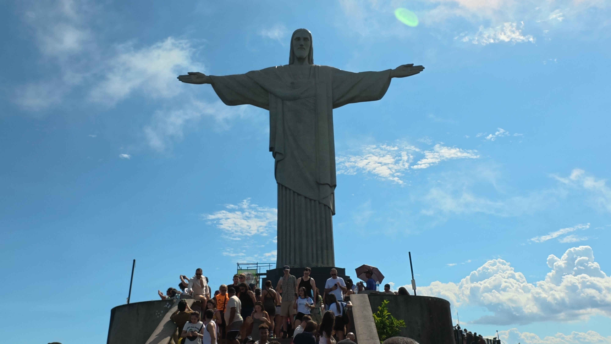
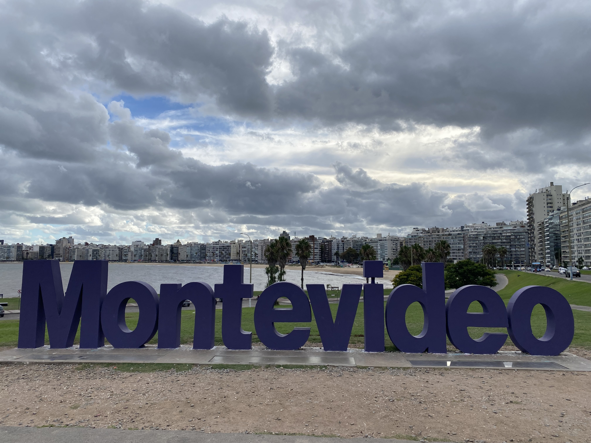

Build around Carnival
Carnival dates were the fixed point. The longer stays in São Paulo and Rio gave that experience room to breathe before the journey moved on.
PORTFOLIO 01 / SOUTH AMERICA
One childhood dream became a five-week journey through four countries, from Brazil’s Carnival celebrations to the wild southern edge of Patagonia.
Discover the journeyExperiencing Brazilian Carnival was a childhood dream. The itinerary was built around making that dream happen.
Three nights in São Paulo and twelve days in Rio de Janeiro put Carnival at the heart of the experience—not as a quick stop, but as the reason for going.
From there, the route moved south through Uruguay and Argentina, reaching Ushuaia for Patagonian hiking and a journey on the Beagle Channel, before turning north toward Iguazú Falls and a day across the border in Paraguay.
Rio, in a different light.

From the rhythm of Carnival
to the silence of Patagonia.
Eight distinct stages, connected by a combination of flights, overland travel and a ferry crossing. Buenos Aires was visited twice to make the southern detour work naturally.
The opening chapter: Carnival, city energy and the beginning of a long-held dream.
The heart of the trip: Carnival celebrations, iconic scenery and time to experience the city beyond the festivities.
A change of pace, with a day trip along the coast to Punta del Este.

Arriving from Uruguay by bus and ferry via Colonia del Sacramento.
Hiking to Laguna Esmeralda, then sailing the Beagle Channel past dramatic landscapes, a lighthouse and penguin colonies.
A deliberate return before the final leg north, keeping the route practical while allowing more time in the capital.
The immense waterfalls, followed by a cross-border day trip to Ciudad del Este in Paraguay.
A final stop in Brazil before flying home to Berlin.
The complete journey began and ended in Berlin. Punta del Este and Ciudad del Este were day trips, not overnight bases.
Good itinerary design isn't about adding the most pins to a map. It's about protecting the experiences that matter, then making the connections around them work.
Carnival dates were the fixed point. The longer stays in São Paulo and Rio gave that experience room to breathe before the journey moved on.
Flights connected the longer stretches; a coastal bus trip, a bus-and-ferry crossing and a cross-border day excursion made sense for shorter distances.
The intensity of Carnival was balanced by Uruguay's coastline, time in Buenos Aires and the mountains and waterways of Tierra del Fuego.
Laguna Esmeralda, penguins on the Beagle Channel and the scale of Iguazú Falls were defining experiences—not incidental stops between flights.
THE TAKEAWAY
Four countries and five weeks, designed around one childhood dream. This is the kind of thoughtful, multi-stop journey I love to plan.